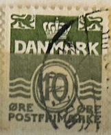
| SOURCE | TITLE| IMAGE MATCH | click to source page |
| eBay | Denmark #Mi0245x MNH 1938 Wavy Lines Definitives [226] | eBay | 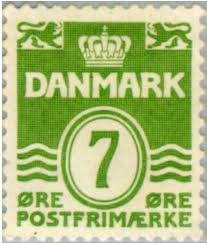 |
| HipStamp | Danmark # 437 - Wavy Lines - 30 öre - used {Dk1} | Europe - Denmark, General Issue Stamp / HipStamp |  |
| eBay | Denmark #Mi0679 MNH 1979 Wavy Lines Definitives [629] | eBay | 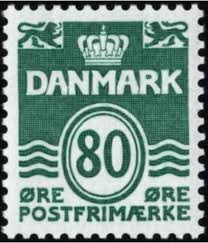 |
| eBay | Danish & Faroese 1971-1980 Year of Issue Stamps for sale | eBay | 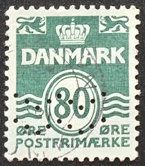 |
| Mercari | postage stamps from Vietnam Rare | Mercari | 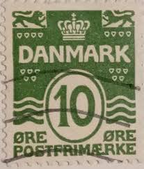 |
| eBay | Green Individual Danish & Faroese Stamps for sale | eBay | 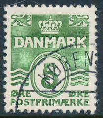 |
| Stampedia | stampedia DENMARK STAMP catalog | 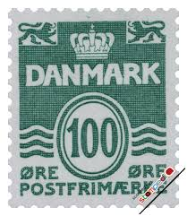 |
| Colnect | Denmark : Stamps [Year: 1938 | Catalog: Michel] [1/2] : Colnect 📮 | 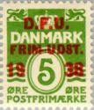 |
| Alamy | Denmark Postage Stamp - Figure 'wave'- type Stock Photo - Alamy | 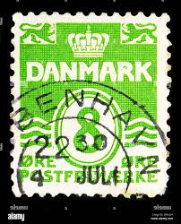 |
| allnumis.com | 10 Ore 1962 - Figure 'wave'- type, Wavy line permanent - Denmark - Stamp - 7685 | 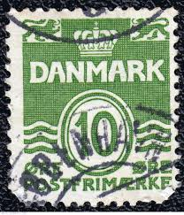 |
| eBay | Flags, National Emblems Danish & Faroese Stamps for sale | eBay | 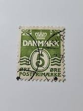 |
| HipStamp | Denmark # 227A - Wavy Lines 8ö - used {Dk11} | Europe - Denmark, General Issue Stamp / HipStamp | 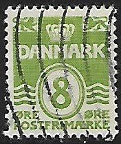 |
| eBay | Orange Danish & Faroese Stamps for sale | eBay | 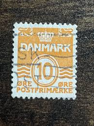 |
| eBay | DENMARK - SON STJ II STAR CANCEL "TORRILD" - OTG | eBay | 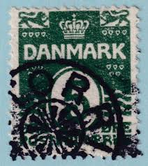 |
| allnumis.com | Stamps Catalog - List of stamps for Wavy line permanent, Denmark | 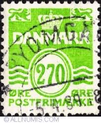 |
| Northwind Stamps | Buy Quality Danish Stamps 1900-1950 - Northwind Stamps | 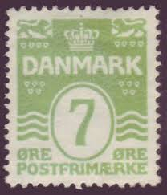 |
| Dreamstime.com | 02 11 2020 Divnoe Stavropol Territory Russia Postage Stamp Denmark 1950 Face Value 10 Era Number in a Box Crown and the Editorial Stock Photo - Image of correspondence, envelope: 180467128 | 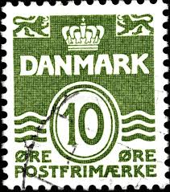 |
| Shutterstock | Denmark Circa 2010 Cancelled Postage Stamp Stock Photo 2705293339 | Shutterstock | 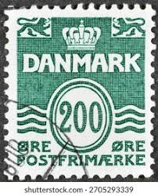 |
| eBay UK | Used Parcel Post Danish & Faroese Stamps for sale | eBay UK | 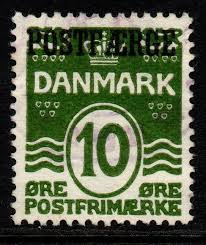 |
| Dreamstime.com | Old stamp of Denmark editorial photography. Image of blank - 82707232 | 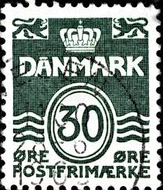 |
| Etsy | Green Cufflinks, Father of the Bride Cufflinks, Denmark Cufflinks - Etsy | 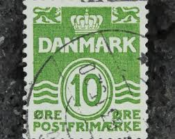 |
| allnumis.com | 200 øre 1983 - Wavy lines and numeral of value, Wavy line permanent - Denmark - Stamp - 20617 | 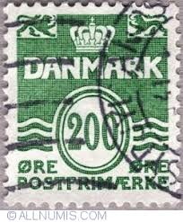 |
| vividagallery.com | Denmark 10 Ore Green Lion and Crown Stamp Tank Top by Vivida Gallery - Vivida Gallery | 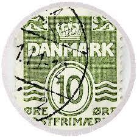 |
| Fine Art America | Denmark 10 Ore Green Lion and Crown Stamp Acrylic Print by Vivida Gallery - Fine Art America | 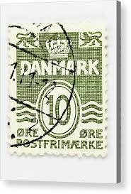 |
| Dreamstime.com | 1,448 Denmark Stamp Stock Photos - Free & Royalty-Free Stock Photos from Dreamstime | 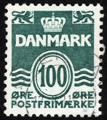 |
| Alamy | Postfrimærke hi-res stock photography and images - Alamy | 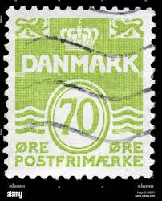 |
| Todocolección | dinamarca 1972 -yvert 539 ** nuevo sin fijasell - Buy Antique stamps of Denmark on todocoleccion | 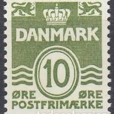 |
| iStock | Sweden Postage Stamps Stock Photo - Download Image Now - Above, Austria, Austrian Culture - iStock | 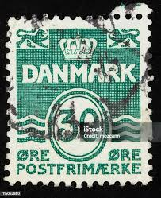 |
| Bob Shop | Denmark - DENMARK - Winter 2012 //Trees was sold for 5.00 on 28 Jan at 21:25 by delovelystamps in Pietermaritzburg (ID:605851203) | 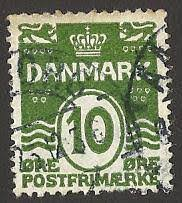 |
| Mercado Libre | Lote 1, Dinamarca, 7 Estampillas Antiguas. | MercadoLibre | 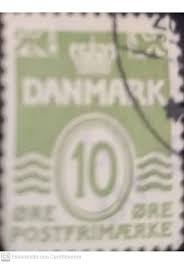 |
| eBay | Violet Danish & Faroese Stamps for sale | eBay | 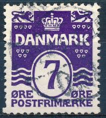 |
| eBay | Used Postal Card, Stationery Danish & Faroese Stamps for sale | eBay | 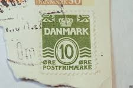 |
| Shutterstock | Denmark Circa 1960s 10 Ore Denmark Stock Photo 45699799 | Shutterstock | 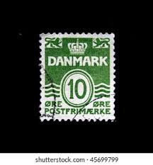 |
| Shutterstock | 1+ Hundred Denmark Approved Design Royalty-Free Images, Stock Photos & Pictures | Shutterstock | 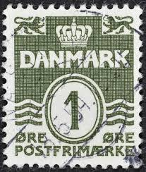 |
| iStock | Posta Romana Postage Stamp Stock Photo - Download Image Now - Horizontal, No People, Obsolete - iStock | 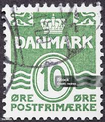 |
| Shutterstock | 2+ Thousand Royal Hamlet Royalty-Free Images, Stock Photos & Pictures | Shutterstock | 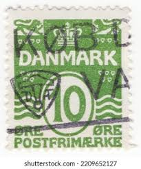 |
| Shutterstock | 8 resultados de imágenes, fotos de stock e ilustraciones libres de regalías para Postfrimaerke | Shutterstock | 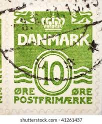 |
| Shutterstock | Philately Perforation: Over 96,026 Royalty-Free Licensable Stock Photos | Shutterstock | 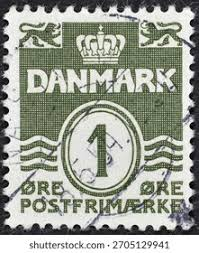 |
| HipStamp | Denmark #90 Numeral Used | Europe - Denmark, General Issue Stamp / HipStamp | 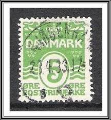 |
| lastdodo.com | Forsikrings – Aktieselskabet “Skandinavia” A/S Grøn & Witzke Perfin catalogue - LastDodo |  |
| eBay UK | Used Postage Danish & Faroese Stamps for sale | eBay UK | 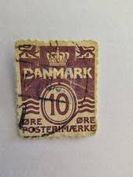 |
| Shutterstock | Karnal Haryana India -july 22nd 2025-closeup Stock Photo 2705086967 | Shutterstock | 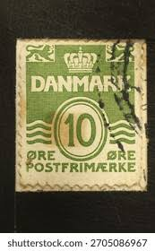 |
| Alamy | Denmark Postage Stamp - Figure 'wave'- type Stock Photo - Alamy | 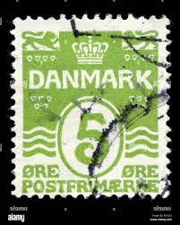 |
| Jay Smith & Associates | Jay Smith & Associates: Denmark: Specialized Stamps: 1933-Onward Engraved Wavy-Lines Numerals | 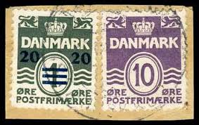 |
| eBay | Denmark 1940 -- Wavy Lines 10 Ore *Used* (HBX) | eBay |  |
| eBay | Denmark 1940 -- Wavy Lines 8 Ore *Used* (HBX) | eBay | 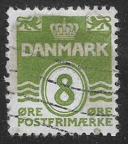 |
| lastdodo.com | Stamps from Faroe Islands Stamp catalogue - LastDodo | 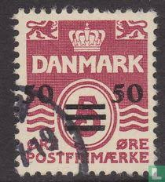 |
| eworldstamps.com | Denmark Definitives Part 3 - The Wavy Lines Numeral Issue 1905 - 2010 - EWorldStamps | 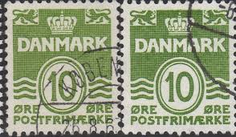 |
| eBay | THE DANISH FLAG # 6-1136 # POSTER STAMP DENMARK 1945 # SEE THE PHOTO # | eBay | 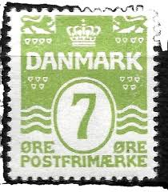 |
| Shutterstock | 3,2 mil resultados de imágenes, fotos de stock e ilustraciones libres de regalías para Circa 1950 | Shutterstock | 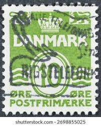 |
| eBay | Denmark - 2003 (1329) Mint never Hinged | eBay | 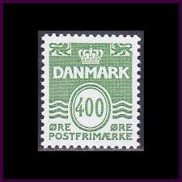 |
| eBay | Denmark #Mi0198Ia MNH 1933 Wavy Lines Definitives [223] | eBay | 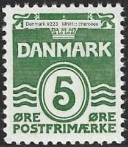 |
| Alamy | DENMARK - CIRCA 1938: stamp printed by Denmark, shows Bertel Thorvaldsen, circa 1938 Stock Photo - Alamy | |
| eBay | Denmark Scott # 61 VF Unused 1912 5 Öre Deep Green | eBay | |
| Which website do you guys use for sellin stamps? I live in Sweden : r/stamps | ||
| eBay | DENMARK. Removed star canc. KREJBJERG small piece (PK1856) | eBay | |
| allnumis.com | 5 Ore - Figure 'wave'- type, Wavy line permanent - Denmark - Stamp - 49118 | |
| eBay | Denmark stamps 1983 Figure 'wave'- type | eBay | |
| eBay | Travelstamps: 1933 DENMARK Stamp Scott 220a AFA 196a Numeral of Value, 1 Øre MNH | eBay |